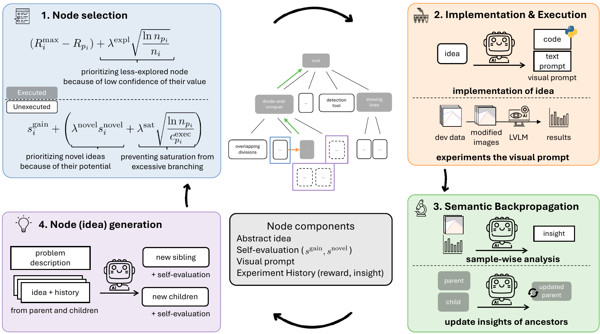
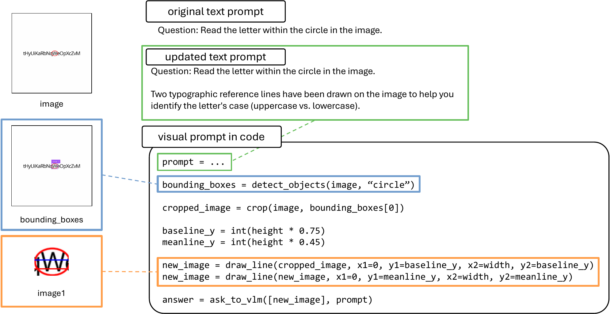
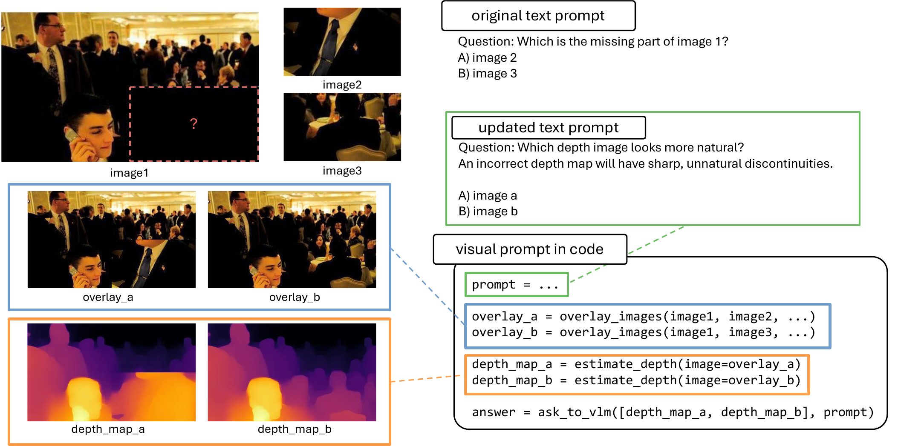
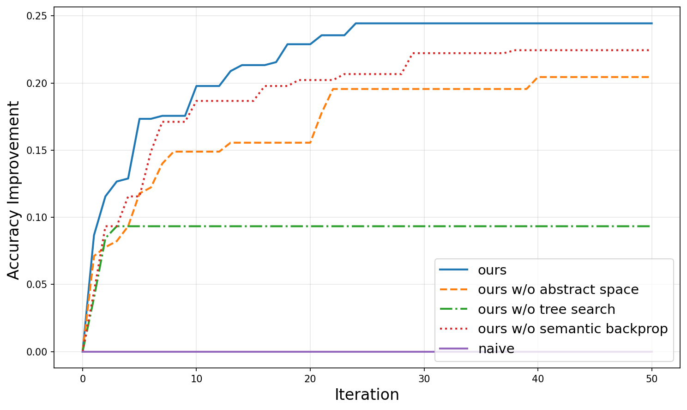
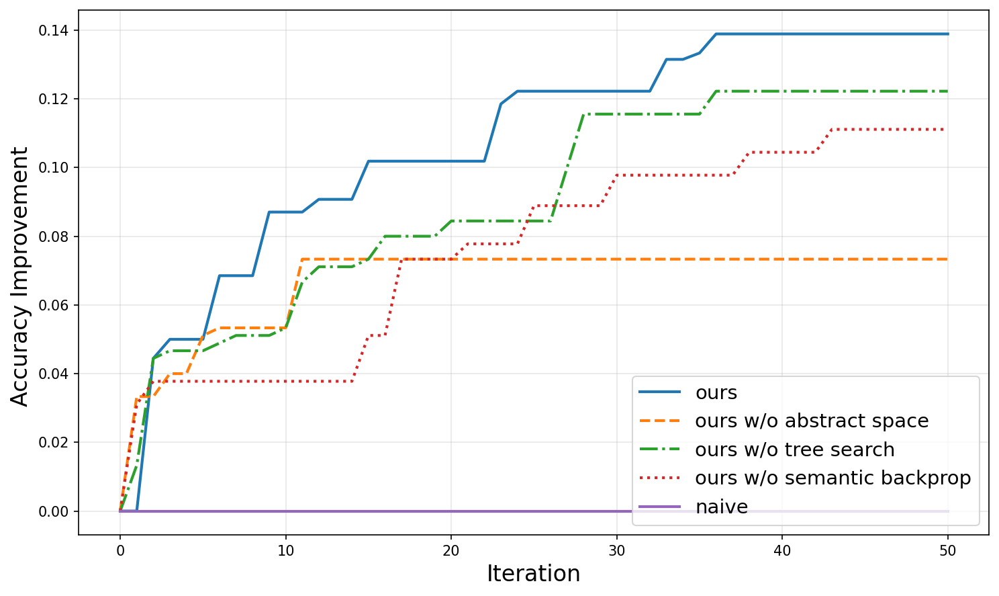
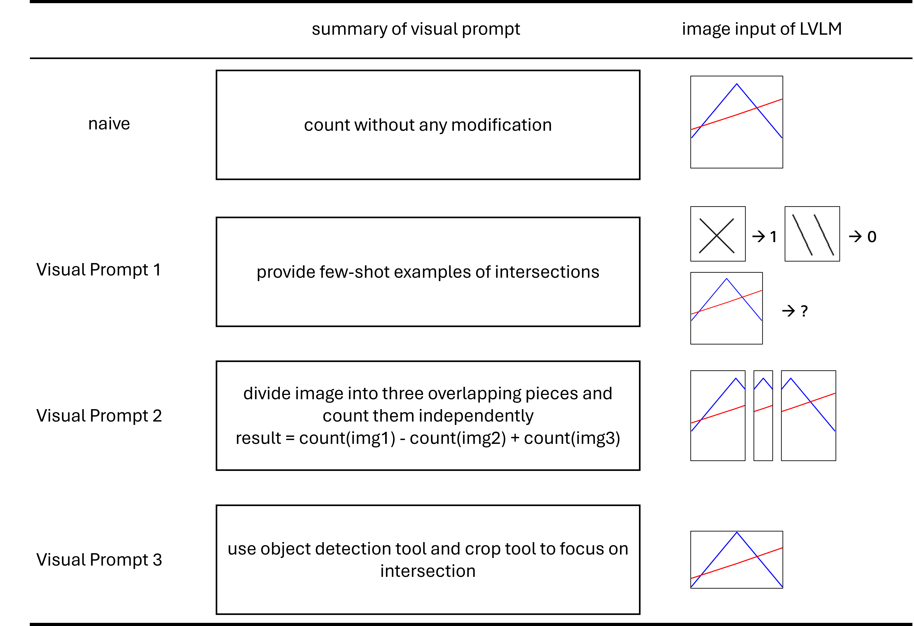

Abstract
Large Vision-Language Models (LVLMs) encounter significant challenges in image understanding and visual reasoning, leading to critical perception failures. Visual prompts, which incorporate image manipulation code, have shown promising potential in mitigating these issues. While visual prompts have emerged as a promising direction, previous methods for visual prompt generation have focused on tool selection rather than diagnosing and mitigating the root causes of LVLM perception failures. Because of the opacity and unpredictability of LVLMs, optimal visual prompts must be discovered through empirical experiments, which have relied on manual human trial-and-error.
In this work, we propose an automated semantic exploration framework for discovering task-wise visual prompts. Unlike previous methods, our approach enables diverse yet efficient exploration through agent-driven experiments, minimizing human intervention and avoiding the inefficiency of per-sample generation. We introduce a semantic exploration algorithm named SEVEX, which addresses two major challenges of visual prompt exploration: (1) the distraction caused by lengthy, low-level code, and (2) the vast, unstructured search space of visual prompts. Specifically, our method leverages an abstract idea space as a search space, a novelty-guided selection algorithm, and a semantic feedback-driven ideation process to efficiently explore diverse visual prompts based on empirical results.
We evaluate SEVEX on the BlindTest and BLINK benchmarks, which are specifically designed to assess LVLM perception. Experimental results demonstrate that SEVEX significantly outperforms baseline methods in task accuracy, inference efficiency, exploration efficiency, and exploration stability. Notably, our framework discovers sophisticated and counter-intuitive visual strategies that go beyond conventional tool usage, offering a new paradigm for enhancing LVLM perception through automated, task-wise visual prompts.
Method
SEVEX treats visual prompt discovery as an iterative search problem over a high-level idea space, rather than searching directly over raw code. The core of our framework is a dynamically expanding search tree in which each node represents an abstract idea for a visual prompt. An LLM agent generates diverse ideas, selects a node with the highest potential using Novelty-guided UCT (NUCT), instantiates it as an executable visual prompt, evaluates it empirically, and back-propagates actionable insights for future idea generation.

Overview of SEVEX. The agent generates diverse ideas, selects the node with the highest potential, executes the idea, and back-propagates insights into ancestor nodes for future idea generation.
Key Results
BlindTest avg. accuracy
72.4%
vs. SketchPad 47.4% / Naive 65.6%
BLINK avg. accuracy
84.1%
vs. SketchPad 78.3% / Naive 76.5%
Inference cost (relative to Naive)
+10.9%
SketchPad uses ~11× more tokens per sample
Exploration cost vs. SketchPad+APE
11.5%
Far more efficient idea-space search
Averaged over four BlindTest tasks and five BLINK tasks. Backbone: Gemini-2.5-flash, 50 exploration iterations.
Discovered Visual Prompts
Examples of visual prompts that SEVEX discovered automatically. Code and text prompts are simplified for visualization.

CircledLetter. The agent uses object detection to localize the target region and draws precise reference lines to help the LVLM distinguish uppercase from lowercase characters.

Jigsaw. The agent overlays candidate pieces onto the query image and repurposes a depth estimation model to detect unnatural discontinuities — a use beyond the tool's intended purpose.
Exploration Efficiency
Each component of SEVEX is essential for efficient exploration. Development-set accuracy is averaged over five independent runs.

Jigsaw

CircledLetter
Non-transferability of Visual Prompts
We find that optimal visual prompts are rarely transferable across different LVLM backbones. A prompt that improves one model can degrade another — for example, a strategy that boosts Claude often underperforms on GPT, and vice versa. This reinforces the need for an automated, model-specific discovery framework rather than relying on a single hand-crafted prompt.

BibTeX
@inproceedings{kim2026sevex,
title = {Visual Prompt Discovery via Semantic Exploration},
author = {Kim, Jaechang and Shimose, Yotaro and Wang, Zhao and Wang, Kuang-Da and Ok, Jungseul and Takamatsu, Shingo},
booktitle = {European Conference on Computer Vision (ECCV)},
year = {2026}
}